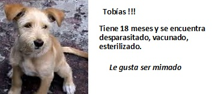
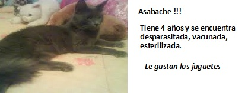
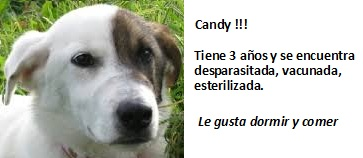
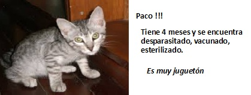
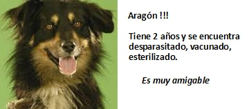
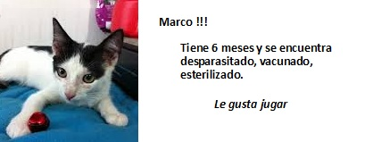
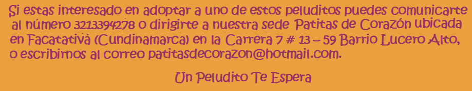

La adopción se trata de brindar una mejor calidad de vida a un peludito, llenarlo de bienestar y amor. Debemos pensar muy bien cuando decidimos adoptar un peludito no se trata solo de llevarlo a casa sino que en el momento que lo adoptemos será parte de la familia y como tal debe ser tratado.